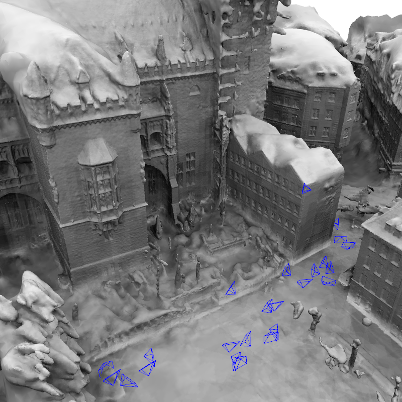
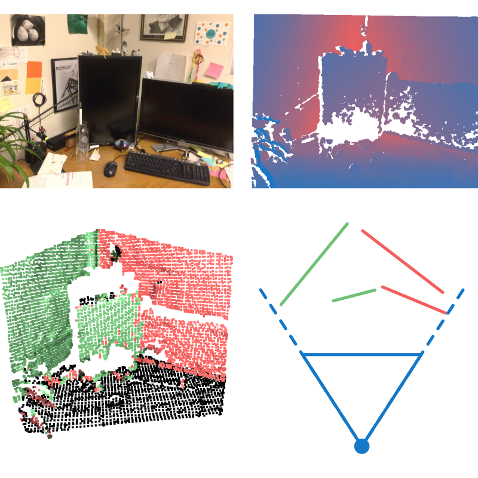

|
Research
At the moment, I focus mainly on exploring the use of non-standard representations for the visual localization task.
|
|

|
MeshLoc: Mesh-Based Visual Localization
Vojtech Panek, Zuzana Kukelova, Torsten Sattler
European Conference on Computer Vision (ECCV), 2022
arXiv /
code /
data /
bibtex
Visual localization pipeline storing just 3D mesh as the representation of the environment. Rendering virtual views and using modern local features on-the-fly. Suprisingly can work somehow even on meshes without any color information.
|
|

|
Visual Localization with Environment Outline Prior
Vojtech Panek, supervised by Torsten Sattler
International Student Conference on Electrical Engineering (POSTER), 2022
paper /
poster
Two-stage visual localization pipeline with environment outlines (floor plans / buildings from OSM) as environment representation. Using retrieval on set of local outlines for coarse pose estimate and ICP for pose refinement.
|
Teaching
I am a teaching assistant for a few courses at the Faculty of Electrical Engineering, CTU in Prague:
Check CourseWare for up-to-date information on the courses.
|